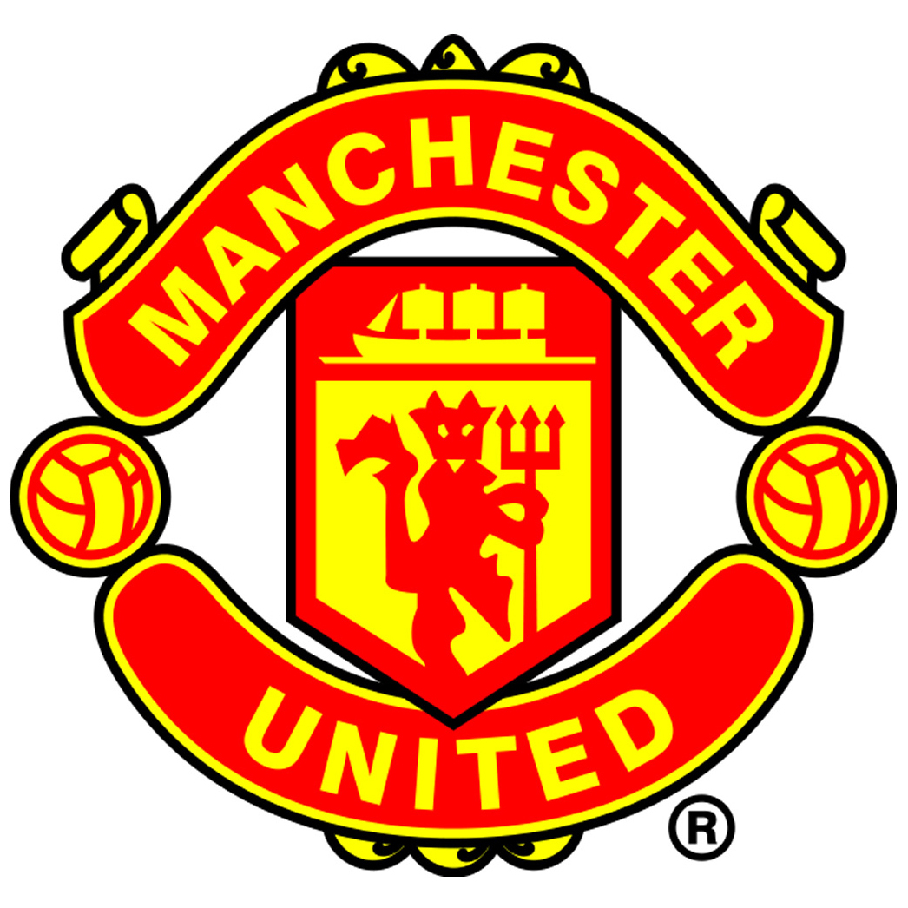
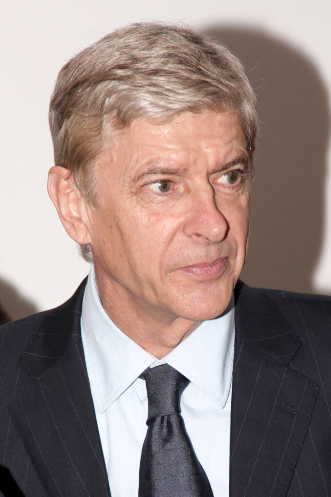
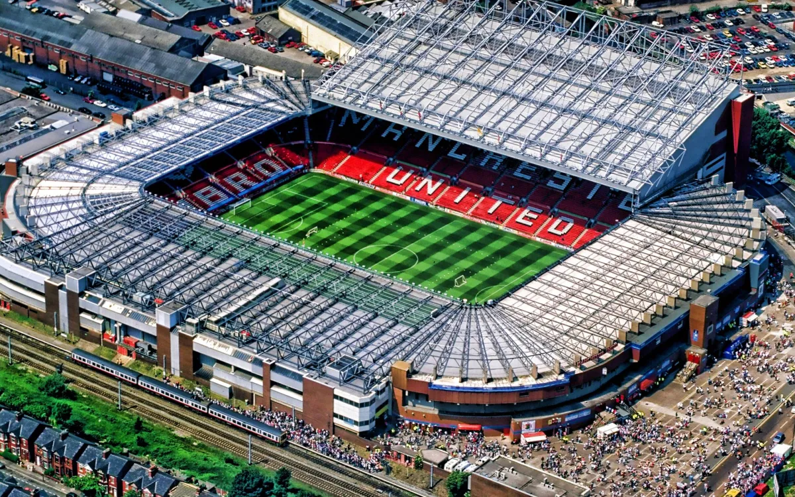
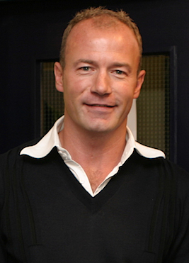
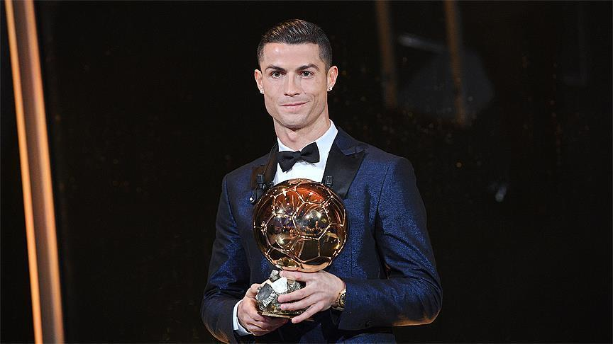
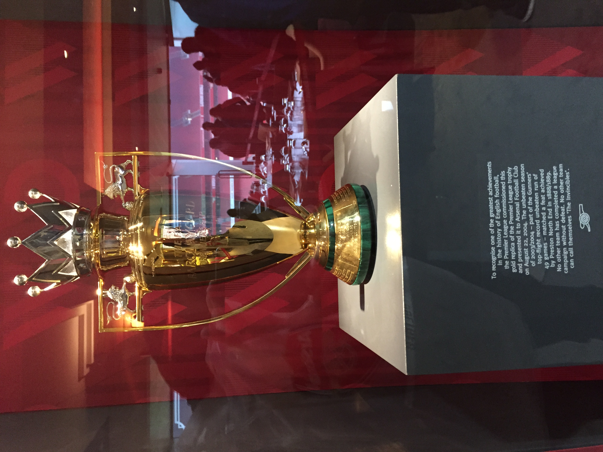

The Premier League is the highest level of the English football league system.
Contested by 20 clubs, it operates on a system of promotion and relegation with the English
Football League (EFL). Seasons typically run from August to May, with each team playing 38
matches against all other teams, both home and away. Most games are played on Saturday and Sunday
afternoons, with occasional weekday evening fixtures.
The competition was founded as the FA Premier League on 20 February 1992 following the decision of First
Division (top-tier league from 1888 until 1992) clubs to break away from the English Football League.
However, teams may still be relegated to and promoted from the EFL Championship.
The Premier League takes advantage of a lucrative television rights sale to Sky
from 2019 to 2020, accumulated television rights were worth around £3.1 billion a year, with Sky
and BT Group securing the domestic rights to broadcast 128 and 32 games, respectively.
The Premier League is a corporation managed by a chief executive, with member clubs acting as shareholders.
Clubs were apportioned central payment revenues of £2.4 billion in 2016–17, with a further £343 million in solidarity payments to EFL clubs.
The Premier League is the most-watched sports league in the world, broadcast in 212 territories to 643 million homes, with a potential TV audience of 4.7 billion
people. For the 2018–19 season, the average Premier League match attendance was at 38,181,second
to the German Bundesliga's 43,500, while aggregated attendance across all matches
was the highest of any association football league at 14,508,981, and most stadium occupancies are near capacity. As of 2023, the Premier League is ranked first
in the UEFA coefficient rankings based on performances in European competitions over the past
five seasons, ahead of Spain's La Liga.The English top-flight has produced the second-highest number
of European Cup / UEFA Champions League titles, with a record six English clubs having won fifteen European championships
in total.
Fifty-one clubs have competed since the inception of the Premier League in 1992: 49 English and two Welsh clubs. Seven of them
have
won the title: Manchester United (13), Manchester City (7), Chelsea (5), Arsenal (3), Blackburn Rovers (1), Leicester City (1),
and Liverpool (1).Only two of them have won three titles in a row (Manchester United
and Manchester City), while only six clubs have avoided relegation: Arsenal, Chelsea,
Everton, Liverpool, Manchester United, and Tottenham Hotspur.The First Division clubs resigned en masse from the Football League in
1992, and on 27 May that year the FA Premier League was formed as a limited
company, working out of an office at the Football Association's then headquarters
in Lancaster Gate. The 22 inaugural members of the new Premier League were:
Arsenal
Aston Villa
Blackburn Rovers
Chelsea
Coventry City
Crystal Palace
Everton
Ipswich Town
Leeds United
Liverpool
Manchester City
Manchester United
Middlesbrough
Norwich City
Nottingham Forest
Oldham Athletic
Queens Park Rangers
Sheffield United
Sheffield Wednesday
Southampton
Tottenham Hotspur
Wimbledon
Manchester united has won the most EPL titles with 13 
Big Four" dominance (2000–10)
The 2000s saw the rise of first Liverpool, and then Arsenal to real competitiveness
, Chelsea finally breaking the duopoly by winning the league in 2004–05. The dominance
of the so-called "Big Four" clubs – Arsenal, Chelsea, Liverpool, and Manchester United
– saw them finish at the top of the table for the bulk of the decade, thereby guaranteeing
qualification for the UEFA Champions League. Only three other clubs managed to qualify for
the competition during this period: Newcastle United (2001–02 and 2002–03), Everton (2004–05)
and Tottenham Hotspur (2009–10) – each occupying the final Champions League spot, with the exception
of Newcastle in the 2002–03 season, who finished third.
Following the 2003–04 season, Arsenal acquired the nickname "The Invincibles" as it became the first, and to date,
only club to complete a Premier League campaign without losing a single game.
In May 2008, Kevin Keegan stated that "Big Four" dominance threatened the division: "This league is in danger of becoming
one of the most boring but great leagues in the world. Premier League chief executive Richard Scudamore
said in defence: "There are a lot of different tussles that go on in the Premier League depending on whether you're at the top, in
the middle or at the bottom that make it interesting.
Between 2005 and 2012 there was a Premier League representative in seven of the eight Champions League finals, with only "Big Four" clubs
reaching that stage. Liverpool (2005), Manchester United (2008) and Chelsea (2012) won the competition during this period, with Arsenal
(2006), Liverpool (2007), Chelsea (2008) and Manchester United (2009 and 2011) all losing Champions League finals
Leeds United were the only non-"Big Four" side to reach the semi-finals of the Champions
League, in the 2000–01 season. There were three Premier League teams in the Champions
League semi-finals in 2006–07, 2007–08, and 2008–09, a feat only ever achieved five times (along with Serie A in 2002–03
and La Liga in 1999–2000).
Additionally, between the 1999–2000 and 2009–10 seasons, four Premier League sides reached UEFA Cup or Europa League finals, with only Liverpool managing to
win the competition in 2001. Arsenal (2000),
Middlesbrough (2006) and Fulham (2010) all lost their finals.
Although the group's dominance was reduced to a degree after this period with the emergence of Manchester City and
Tottenham, in terms of all-time Premier League points won they remain clear by some margin. As of the end of the 2021–22 season –
the 27th season of the Premier League – Liverpool, in fourth place in the
all-time points table, were over 300 points ahead of the next team, Tottenham
Hotspur. They are also the only teams to maintain a winning
average of over 50% throughout their entire Premier League tenures.
Emergence of the "Big Six" (2010s)
The years following 2009 marked a shift in the structure of the "Big Four"
with Tottenham Hotspur and Manchester City both breaking into the top four places
on a regular basis, turning the "Big Four" into the "Big Six". In the 2009–10 season, Tottenham
finished fourth and became the first team to break into the top four since
Everton five years prior. Criticism of the gap between an elite group of "super clubs" and
the majority of the Premier League has continued, nevertheless, due
to their increasing ability to spend more than the other Premier League clubs
Manchester City won the title in the 2011–12 season, becoming the first club outside
the "Big Four" to win since Blackburn Rovers in the 1994–95 season. That
season also saw two of the "Big Four" (Chelsea and Liverpool) finish outside the top four
places for the first time since that season.
Promotion and relegation
A system of promotion and relegation exists between the Premier League and the EFL
Championship. The three lowest placed teams in the Premier League are relegated to the Championship
, and the top two teams from the Championship promoted to the Premier League, with an additional
team promoted after a series of play-offs involving the third, fourth, fifth and sixth placed clubs.
The number of clubs was reduced from 22 to 20 in 1995, when four teams were relegated from the league
and only two teams promoted. The top flight had only been expanded to 22 teams at the start of the 1991–92
season – the year prior to the formation of the Premier League.
On 8 June 2006, FIFA requested that all major European leagues, including Italy's Serie A and Spain's La Liga,
be reduced to 18 teams by the start of the 2007–08 season. The Premier League responded by announcing their intention
to resist such a reduction.Ultimately, the 2007–08 season kicked off again with 20 teams.
Qualification for European competitions
The top four teams in the Premier League qualify automatically for the subsequent season's UEFA Champions
League group stage. The winners of the Champions League and UEFA Europa League may earn an additional qualification for
the subsequent season's Champions League group stage if did not finish in the top four. If this means six Premier
League teams qualify, then the fourth-placed team in the Premier League is instead entered in the Europa League,
as any single nation is limited to a maximum of five teams in the Champions
League.
The fifth-placed team in the Premier League, as well as the winners of the FA Cup, qualify for the subsequent season's Europa
League group stage, but if the winner of the FA Cup also finished in the top five places in the Premier League or has won
one of UEFA's major tournaments, then this place reverts to the team that finished sixth. The winner of the EFL
Cup qualifies for the subsequent season's UEFA Europa Conference League, but if the winner had already qualified for a UEFA
competition via their performance in another competition, then this place reverts to the team that finished sixth in the Premier
League, or seventh if the FA Cup result had already caused the sixth-placed team to qualify.
The number of places allocated to English clubs in UEFA competitions is dependent upon the position the country holds in the UEFA
coefficient rankings, which are calculated based on the performance of teams in UEFA competitions over the previous five years.
Currently, England is ranked first, ahead of Spain.
Video Assistant Referee
Video assistant referee (VAR), was introduced to the Premier League at the beginning of the 2019–20 season. It uses technology
and officials to assist the referee in making decisions on the pitch. However, its use has been met with mixed receptions from
fans and pundits, with some praising its accuracy while others criticise its impact on the flow of the game and consistency of decision-making.
The on-field referee still makes the final decision, but VAR can assist the referee in the decision-making process. VAR can only be used for
four types of decisions: goals, penalty decisions, direct red card incidents, and cases of mistaken identity. VAR officials review the video
footage and communicate with the on-field referee via a headset. The VAR officials are located in a central control room, which is equipped
with multiple camera angles and the ability to replay footage at various speeds.
A study evaluating fan reception of VAR in the Premier League was made by Otto Kolbinger and Melanie Knopp and was done by analysing Twitter
data. The researchers used sentiment analysis to measure the overall positive or negative attitudes towards VAR, as well as topic modelling
to identify specific issues that fans are discussing related to VAR. The study found that the reception of VAR on Twitter is largely negative,
with fans expressing frustration and criticism of the technology's impact on the flow of the game and the inconsistency of decisions.
The researchers also identified specific issues, such as handball and offside decisions, that fans are particularly critical of.
The study concludes that VAR has not been well received by fans in the Premier League, and that efforts to improve the technology and increase
transparency in decision-making are needed to address these concerns
Sponsorship
After an inaugural season with no sponsorship, the Premier League was sponsored by Carling from 1993 until 2001, during which time it was known as the FA Carling Premiership. In 2001, a new sponsorship deal with Barclaycard saw the league rebranded the FA Barclaycard Premiership, which was changed to the FA Barclays Premiership in time for the 2004-05 season.
Barclays' deal with the Premier League expired at the end of the 2015–16 season. The FA announced on 4 June 2015 that it would not pursue any further title sponsorship deals for the Premier League, arguing that they wanted to build a "clean" brand for the competition more in line with those of major U.S. sports leagues.
Nike "Maxim" ball used in the Premier League in 2012
As well as sponsorship for the league itself, the Premier League has a number of official partners and suppliers
Managers
Managers in the Premier League are involved in the day-to-day running of the team, including the training, team selection and player acquisition. Their influence varies from club-to-club and is related to the ownership of the club
and the relationship of the manager with fans. Managers are required to have a UEFA Pro Licence which is the final coaching qualification available,
and follows the completion of the UEFA 'B' and 'A' Licences. The UEFA Pro Licence is required by every person who wishes to manage a club in the Premier League on
a permanent basis (i.e., more than 12 weeks, the amount of time an unqualified caretaker manager is allowed to take control). Caretaker appointments are managers
that fill the gap between a managerial departure and a new appointment. Several caretaker managers have gone on to secure a permanent managerial post after performing well
as a caretaker, including Paul Hart at Portsmouth, David Pleat at Tottenham Hotspur and Ole Gunnar Solskjær at Manchester United.

Arsène Wenger is the longest-serving manager, having been in charge of Arsenal in the Premier League from 1996 to his departure at the conclusion of the 2017–18
season, and holds the record for most matches managed in the Premier League with 828, all with Arsenal. He broke the record set by Alex Ferguson, who had managed 810 matches
with Manchester United from the Premier League's inception to his retirement at the end of the 2012–13 season. Ferguson was in charge of Manchester United from November 1986 until
his retirement at the end of the 2012–13 season, meaning he was manager for the last five years of the old Football League First Division and all of the first 21 seasons of the Premier
League.
Notably, since its creation the Premier League has never been won by an English manager.
There have been several studies into the reasoning behind, and effects of, managerial sackings. Most famously, Professor Sue Bridgewater of the University of Liverpool and Dr. Bas ter Weel of the University of Amsterdam, performed two
separate studies which helped to explain the statistics behind managerial sackings. Bridgewater's study found clubs generally sack
their managers upon dropping below an average of one point per match.
Stadiums
As of the 2023–24 season, Premier League football has been played in 61 stadiums since the formation of the division. The Hillsborough disaster in 1989 and the subsequent Taylor Report saw
a recommendation that standing terraces should be abolished. As a result, all stadiums in the Premier League are all-seater. Since the formation of the Premier League, football grounds in England have
seen constant improvements to capacity and facilities, with some clubs moving to new-build stadiums. Eleven stadiums that have seen Premier League football have now been demolished. The stadiums for the 2023–24 season
show a large disparity in capacity. For example, Old Trafford, the home of Manchester United, has a capacity of 74,031 while Dean Court, the home of Bournemouth, has a capacity of 11,307. The combined total capacity of the
Premier League in the 2023–24 season is 787,002 with an average capacity of 39,350.
Stadium attendances are a significant source of regular income for Premier League clubs.For the 2022–23 season, average attendances across the league clubs were 40,235 for Premier League
matches with an aggregate attendance of 15,289,340. This represents an increase of 19,109 from the average attendance of 21,126 recorded in the Premier League's first season (1992–93). However, during the 1992–93 season, the capacities
of most stadiums were reduced as clubs replaced terraces with seats in order to meet the Taylor Report's 1994–95 deadline for all-seater stadiums.The 2022–23 season also set a competition record for total attendance with
more than 15 million spectators, with average attendance also reaching record levels, surpassing the previous record of 38,766 set in the 1948–49 season. 
Topscorers
The Premier League Golden Boot is awarded each season to the top scorer in the division. Former Blackburn Rovers and Newcastle United striker Alan Shearer holds the record for most Premier League goals with 260.
Thirty-three players have reached the 100-goal mark. Since the first Premier League season in 1992–93, 23 players from 11 clubs have won or shared the top scorer title.Thierry Henry won his fourth overall.
scoring title by scoring 27 goals in the 2005–06 season. Erling Haaland holds the record for most goals in a Premier League season (38 matches) with 36 goals as of 15
May 2023. Ryan Giggs of Manchester United holds the record for scoring goals in consecutive seasons, having scored in the first 21
seasons of the league. Giggs also holds the record for the most Premier League assists, with 162.

Player and manager awards
A man-of-the-match award is awarded to the player who has the greatest impact in an individual match.
Monthly awards are also given for the Manager of the Month, Player of the Month and Goal of the Month.
These are also issued annually for Manager of the Season, Player of the Season.and Goal of the Season. The Young Player of the Season
award is given to the most outstanding U-23 player starting from the 2019–20 season.
The Golden Boot award is given to the top goalscorer of every season, the Playmaker of the Season
award is given to the player who makes the most assists of every season, and the Golden Glove award is given to the goalkeeper
with the most clean sheets at the end of the season.
From the 2017–18 season, players receive a milestone award for 100 appearances and every century
there after and also players who score 50 goals and multiples thereof. Each player to reach these milestones is to receive a presentation box from the
Premier League containing a special medallion and a plaque commemorating their achievement 
Trophy
The Premier League maintains two trophies – the genuine trophy (held by the reigning champions) and a spare replica. Two trophies are held for the purpose of
making the award within minutes of the title being secured, in the event that on the final day of the season two clubs are still within reach of winning
the League. In the rare event that more than two clubs are vying for the title on the final day of the season, a replica won by a previous club is used.
The current Premier League trophy was created by Royal Jewellers Garrard & Co/Asprey of London and was designed in house at Garrard
& Co by Trevor Brown and Paul Marsden. It consists of a trophy with a golden crown and a malachite plinth base. The plinth weighs 33 pounds (15 kg) and the trophy
weighs 22 pounds (10.0 kg). The trophy and plinth are 76 cm (30 in) tall, 43 cm (17 in) wide and 25 cm (9.8 in) deep.
Its main body is solid sterling silver and silver gilt, while its plinth is made of malachite, a semi-precious stone. The plinth has a silver band around
its circumference, upon which the names of the title-winning clubs are listed. The green of the malachite represents the
green field of play. The design of the trophy is based on the heraldry of Three Lions that is associated with English football.
Two of the lions are found above the handles on either side of the trophy – the third is symbolised by the captain of the title-winning team as he raises the
trophy, and its gold crown, above his head at the end of the season. The ribbons that drape the handles are presented in the team colours of the league champions that year. In 2004,
a special gold version of the trophy was commissioned to commemorate Arsenal winning the title without
a single defeat

20 Seasons Awards
In 2012, the Premier League celebrated its second decade by holding the 20 Seasons Awards:
Fantasy Team of the 20 Seasons
Panel Choice: Peter Schmeichel, Gary Neville, Tony Adams, Rio Ferdinand, Ashley Cole, Cristiano Ronaldo, Roy Keane, Paul Scholes, Ryan Giggs, Thierry Henry, Alan Shearer
Public Vote: Peter Schmeichel, Gary Neville, Tony Adams, Nemanja Vidić, Ashley Cole, Cristiano Ronaldo, Steven Gerrard, Paul Scholes, Ryan Giggs, Thierry Henry, Alan Shearer
Best Manager: Sir Alex Ferguson
Best Player: Ryan Giggs
Most Appearances: Gareth Barry (652)
Top Goalscorer: Alan Shearer (260)
Most Clean Sheets: David James (173)
500 Club: Steven Gerrard, Jamie Carragher, Gareth Barry, Ryan Giggs, David James, Gary Speed, Frank Lampard, Emile Heskey and Sol Campbell
Best Goal: Wayne Rooney, 12 February 2011, Manchester United vs Manchester City
Best Save: Craig Gordon, 18 December 2010, Sunderland vs Bolton Wanderers